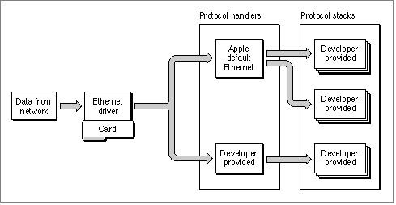

Legacy Document
Important: The information in this document is obsolete and should not be used for new development.
Important: The information in this document is obsolete and should not be used for new development.


About Ethernet, Token Ring, and FDDI Support
You can write an application that processes packets for a protocol other than AppleTalk and run your application on Macintosh computers that also run the AppleTalk protocol stack. To send data from your application, you need to communicate directly with a network hardware device driver. To read data, you either use the LAP Manager or directly communicate with the hardware device driver, depending on the type of packet that your application processes. To read data from the network hardware device driver, you must use a protocol handler, which is code that the driver calls, in this case, to process an incoming packet for a specific protocol type.Ethernet Phase 1 packets are IEEE 802.3 protocol packets. If your application processes Ethernet Phase 1 packets, you can use the default protocol handler that Apple Computer, Inc. provides to read data addressed to the protocol type that your application handles, or you can create and attach your own protocol handler to read that data. The chapter "Link-Access Protocol (LAP) Manager" in this book provides more information about Phase 1 and Phase 2 packets, including figures that show the two packet formats.
For Ethernet Phase 1 packets, the Apple Ethernet implementation supports multiple protocol types, and more than one protocol handler can be attached to the Ethernet driver at the same time. For example, you can write an application implementing a protocol stack that uses the default Apple Ethernet protocol handler. Another developer can write an application implementing a different protocol stack, and it, too, can use the default Apple Ethernet protocol handler. A third developer can write an application implementing yet another protocol stack that supplies and attaches its own protocol handler to the Ethernet driver. All of these applications can run concurrently on the same machine. Figure 11-1 shows three developer-provided applications that implement protocol stacks, all using the Ethernet driver at the same time.
Figure 11-1 Using protocol handlers to read data directly from the Ethernet driver

The Ethernet driver maintains a list that identifies the protocol handler for each protocol type. When you attach your protocol handler to the Ethernet driver, it adds an entry to its list for the type of protocol that your application supports along with the pointer to your protocol handler. When a packet arrives for your application, the driver reads the protocol type, locates the pointer to the protocol handler, and calls the protocol handler to read the data.
For all 802.2 packets, which includes Ethernet Phase 2 packets and all token ring and FDDI packets, Apple Computer, Inc. recommends that you attach your protocol handler using the LAP Manager interface. All AppleTalk packets are 802.2 packets. (For more information about using the LAP Manager to attach protocol handlers, see the chapter "Link-Access Protocol [LAP] Manager" in this book.)
At the hardware device driver level, only one protocol handler can be attached to receive 802.2 packets. Although you can attach more than one protocol handler at this level, if you do so, you will cause problems for AppleTalk. The AppleTalk protocol stack uses the LAP Manager's protocol handler for 802.2 packets to connect to a hardware device driver. (All AppleTalk packets are 802.2 packets.) If you attach your own protocol handler for 802.2 packets, the LAP Manager will be unable to attach its protocol handler, and you will have excluded AppleTalk from using the hardware device driver simultaneously.
For example, suppose a user is running your application with its own protocol handler over token ring and AppleTalk over Ethernet. If the user decides to change the AppleTalk network type to token ring, the attempted connection switch will fail because the LAP Manager will not be able to attach its protocol handler to the token ring device driver. To avoid problems such as these, Apple recommends that you attach your protocol handler to read Ethernet Phase 2, token ring, or FDDI 802.2 packets through the LAP Manager.
The LAP Manager installs a protocol handler at the hardware device driver level that receives 802.2 packets and that also serves as a dispatcher. This protocol handler maintains an index of registered protocol types and pointers to their protocol handlers, which allows the LAP Manager to act as a dispatcher, thereby permitting the concurrent use of a token ring or FDDI hardware device driver by more than one application, including AppleTalk.
- Notes for applications that handle token ring and FDDI 802.2 packets
- Apple provides specifications for both token ring and FDDI drivers
that result in these implications for network applications:
- n Only one protocol handler can be attached at the hardware device driver level.
- n Only one protocol type is supported: the IEEE 802.2 Type 1 protocol that provides for a connectionless, or datagram, service.
- n Apple does not provide a default protocol handler for token ring
or FDDI.- These limitations do not restrict you from attaching your own protocol handler directly to a token ring or an FDDI hardware device driver, but doing so results in the consequences stated previously.
Subtopics
- About Multivendor Network Interface Controller (NIC) Support
- About Multicast Addressing